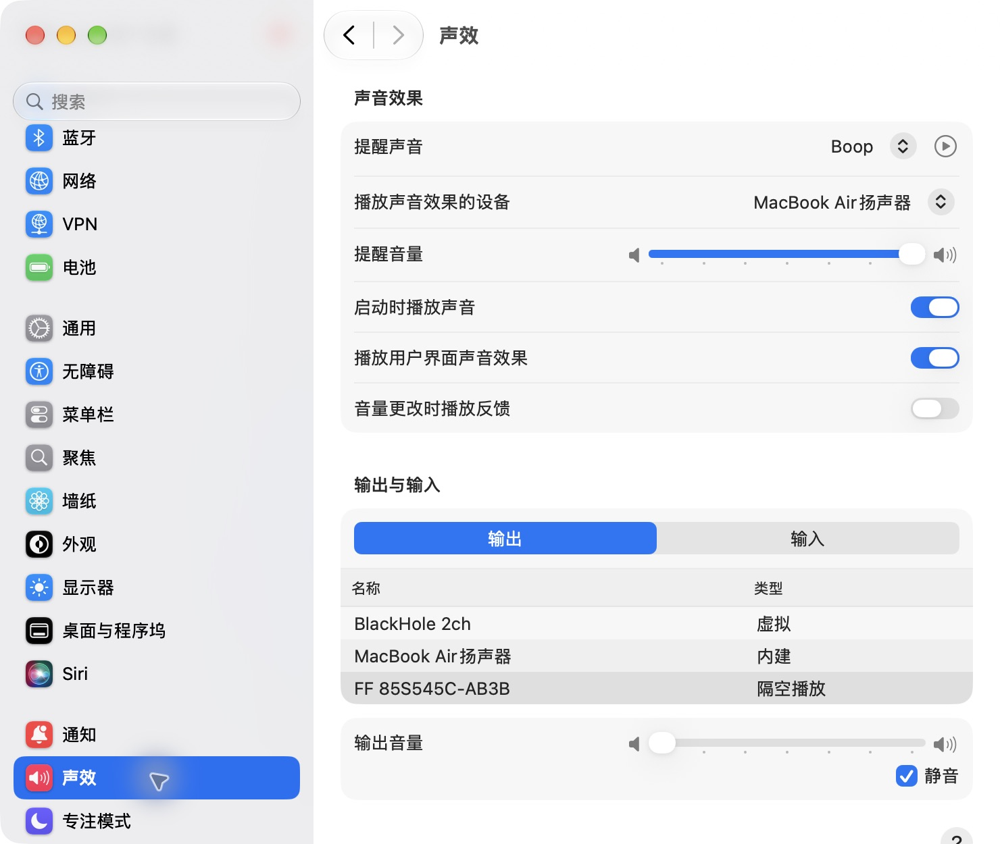
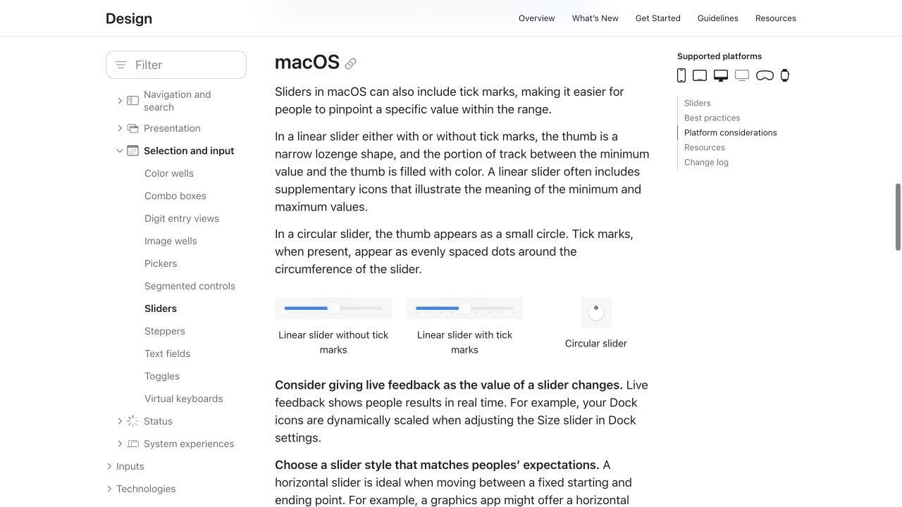
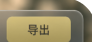
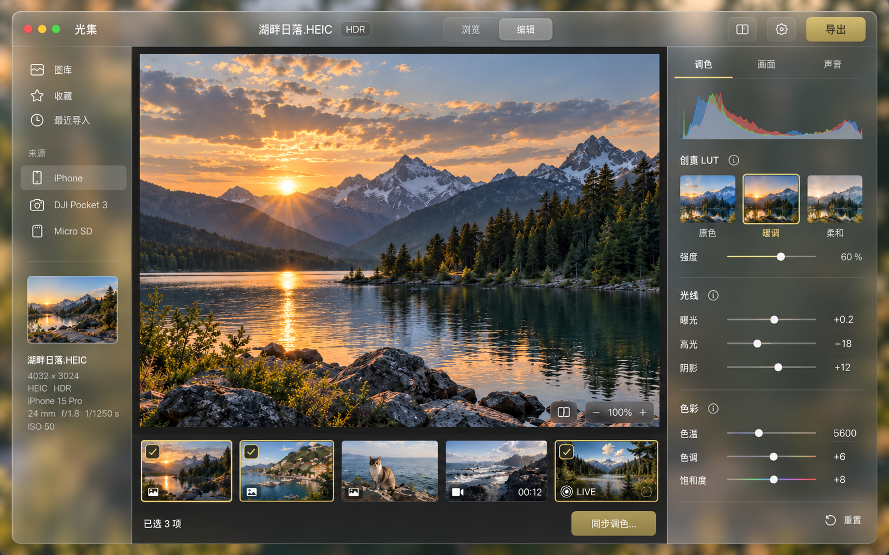
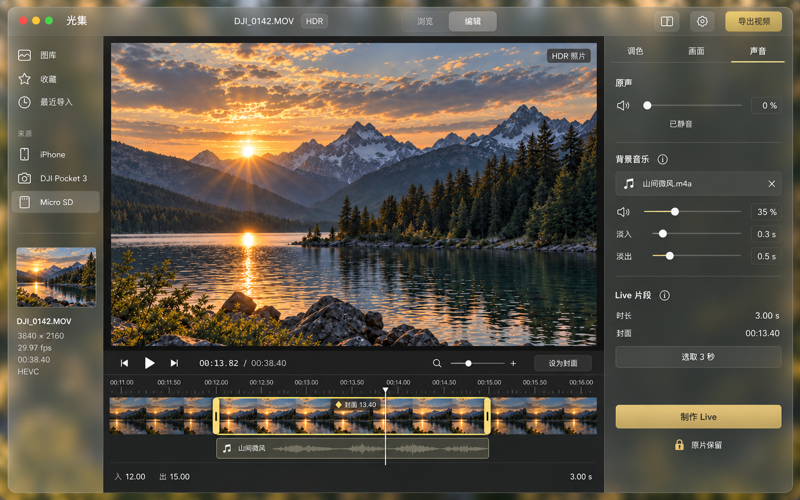
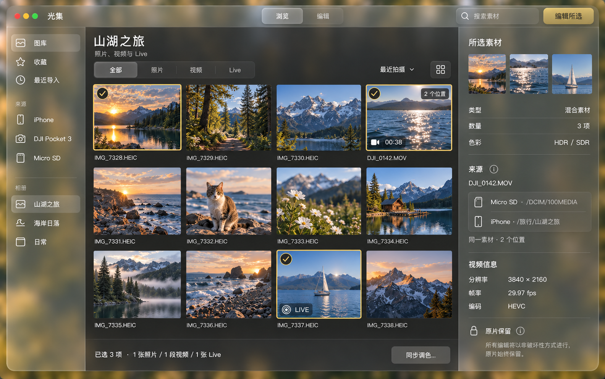
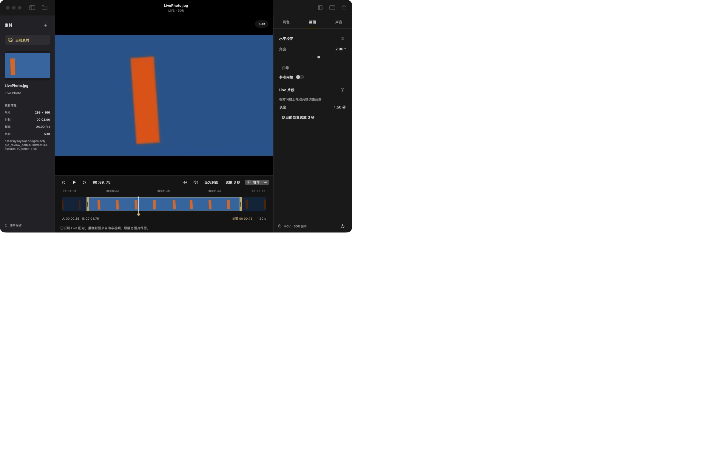
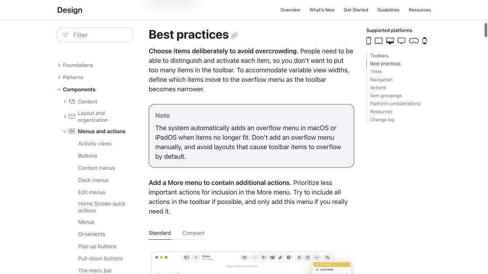

玻璃感更强，未必更像 macOS
上一版组图的圆形滑块头不符合当前 macOS 标准线性滑块形态，按钮与图标的比例也缺少原生控件依据。修正方向是先使用真实系统组件，再安排玻璃材质与摄影工作台的层级。
范围：三张 Liquid Glass 概念图、用户提供的导出按钮截图、现有应用控件代码。实机：macOS 27.0.1（26A434）。本次为核查，未修改应用实现。
01 / 先对照真实控件



02 / 三张组图的逐项发现
“规范确认”表示有官方依据；“设计判断”表示针对调色工作台的建议，不冒充 Apple 的强制尺寸规则。
| 位置 / 优先级 | 已看到的问题 | 核查依据 | 修正方式 |
|---|---|---|---|
| 参数和音量滑块优先 · 规范 + 实机确认 | 调色、声音页均用小圆点和发丝细线，缺少系统滑块头的形状与状态反馈。 | Sliders：线性滑块使用细长胶囊形滑块头。自定义允许，但应有明确价值。 | 首选原生 Slider / NSSlider；保留可输入数值。双向参数可补零点语义，避免以手绘圆点替代整套系统交互。 |
| 导出与工具栏优先 · 规范 + 设计判断 | 金色大底座与相邻方形图标底座显得像独立网页按钮，右上角过重。 | Buttons 允许文字、符号或两者；Toolbars 倡导标准组件、减少自定义背景和着色。 | 使用原生 ToolbarItem 与 SF Symbols，导出动作清楚标注。需要另开导出设置时用“导出…”；文字动作与图标组保持清晰分隔。保留必要的主操作强调，避免每个动作同等醒目。 |
| 侧栏与工具图标较高 · 设计判断 | 侧栏线性图标、齿轮、显示面板图标的绘制比例与笔画不够一致，部分底座过大。 | SF Symbols 提供与文本协调的符号。图片像素不能直接当成界面 pt 尺寸。 | 统一真实 SF Symbols 的字重与 scale，由系统控件确定容器；针对桌面密度评估 small / regular。不要把点击区域与图标本身一起缩小，也不要随意引用“官方统一 16 pt”等不存在的规则。 |
| 两侧材质较高 · 规范 + 设计判断 | 概念图左右整片面板透出绿色、金色光斑；右侧参数区尤其抢眼。 | Materials 区分导航 / 控件功能层与内容层；强调节制使用玻璃。WWDC26 确认 macOS 27 侧栏仍允许内容流过背后。 | 左侧可保留系统侧栏材质；右侧按实际容器采用中性 inspector / 标准材质，降低背景染色。预览背景稳定；无须为了显得玻璃而让整个工作台透出墙纸。 |
| 窗口与导航较高 · 规范 + 设计判断 | 大标题栏同时堆叠品牌、文件名、浏览 / 编辑切换及多个按钮，视觉层次拥挤。 | Toolbars 强调有用的窗口标题、按任务分组、减少分组数量。 | 标题优先当前文件或图库；品牌标识可以克制呈现。浏览 / 编辑作为产品工作区切换可保留，但使用系统分段控件，并与标题、工具组错开。 |
| Live 时间线保留结构 · 设计判断 | 独立播放头、封面、裁切范围的结构清楚，但金色范围及手柄偏厚。没有适用于所有剪辑软件的 macOS 系统时间线样式。 | 本次检查 Live 组图；属于媒体编辑器专用交互，不能直接等同音量 Slider。 | 保留专业自定义时间线，细化手柄与范围强调。播放头、入出点、封面分别操作；真实源帧、帧级移动和时间码对齐比玻璃装饰优先。 |
| 多选与来源次要 · 设计判断 | 图库多选的类型提示清楚；来源区域又出现外框，选中边框和勾选偏重。 | 本次检查图库组图；同一素材多位置属于产品自己的资源模型。 | 来源改成简洁行，弱化选中描边；按住 Command / Shift 的选择行为需在实现中验证。不能只用颜色表达选中状态。 |
| HDR / 原片语义较高 · 截图确认 | 视频页出现“HDR 照片”，与 MOV 素材不符；按原片 / 编辑图作比较的图标语义尚需落实。 | 本次视频概念图直接可见；仍属于 Image Gen 的文字与语义错误。 | 改用 HDR / HDR 原片等准确状态。对比按钮应有清楚的说明和快捷键；原片保留继续作为固定状态，不画为可关闭选项。 |
查看本次审查的三张概念图



03 / 现有代码也有一个确定的问题
参数滑块是自绘圆点
WorkbenchUI.swift 中的 SlimSlider 用 2 pt 轨道和 9 × 9 pt 的 Circle 绘制。虽然补了原生 Slider 的无障碍表示，视觉与鼠标拖动仍是自定义控件，不会自动变成系统最新滑块。
工具栏已经用了原生路径
MediaWorkbenchApp.swift 使用 ToolbarItem，导出使用 square.and.arrow.up；当前应用的导出没有概念图中的大金色底座。IconButton 使用 13 pt SF Symbol、30 × 28 pt 点击区，也不能直接按概念图的大图标来判断实际实现。
MediaTimeline.swift 的“制作 Live”已采用 .glassProminent 与 .controlSize(.small)。下一步应保留系统路径，优先替换自绘参数 Slider，而非照着概念图重新手绘系统按钮。


04 / 修正的顺序
建立真实控件样板
用当前 SDK 的 Slider、Button、Toolbar、分段控件做一页原生样板，记录默认、悬停、按下、焦点和禁用状态。明确鼠标与键盘交互，避免 Image Gen 决定细节。
重新安排界面层级
保持大预览、中性参数区、清晰时间线；顶部和导航采用系统材质。按图标组、文件标题、主操作整理工具栏。
再绘制与实现
把实机样板截图作为绘图参考，再输出三页；以原生组件实现控件，以专用视图实现时间线。实机验证透明度设置、键盘、缩窄窗口和响应速度。
05 / 核查边界与来源
- 核实了当前系统版本、声效设置的滑块、官方 HIG 图示，以及当前应用实际窗口和相关代码。
- 概念图仅能判断静态形态，无法验证 hover、按下动效、键盘焦点、减少透明度、可点击区域或帧率。本次未改变这些系统设置，也未声称通过这些交互测试。
- 没有把 iOS 控制中心的大音量条套到 Mac 的参数面板；没有为所有 macOS 按钮规定唯一圆角、统一像素大小或“必须只有图标”。
Apple · Sliders · Buttons · Toolbars · SF Symbols · Materials
Adopting Liquid Glass：优先系统框架组件，减少干扰系统材质的自定义背景。WWDC26 · AppKit 的 macOS 27 章节：侧栏延伸至边缘、内容流过背后、玻璃互动效果节制使用。
官方工具栏页面捕获
